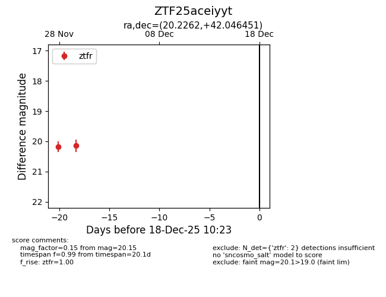
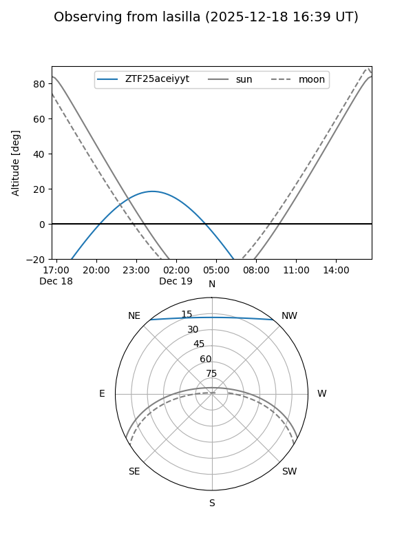
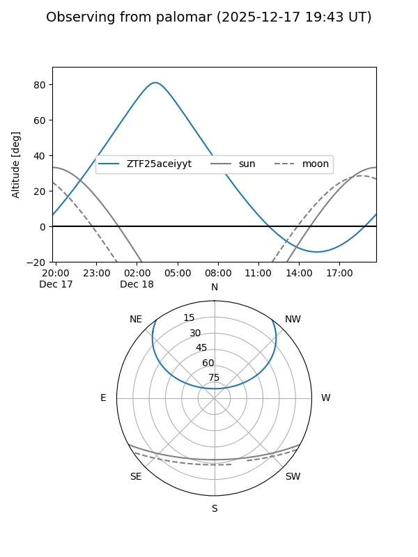

ZTF25aceiyyt
Target ZTF25aceiyyt at 2025-12-18 11:17
Aliases and brokers:
FINK: fink-portal.org/ZTF25aceiyyt
Lasair: lasair-ztf.lsst.ac.uk/objects/ZTF25aceiyyt
ALeRCE: alerce.online/object/ZTF25aceiyyt
alt names
ZTF25aceiyyt (ztf,fink_ztf)
Coordinates:
equatorial (ra, dec) = 20.2262,+42.04645
equatorial (HMS+DMS) = 01:20:54.28,+42:02:47.22
galactic (l, b) = (128.7660,-20.49126)
Photometry
last ztfr=20.15
2 ztfr detections
Lightcurve

Visibility


Additional plots